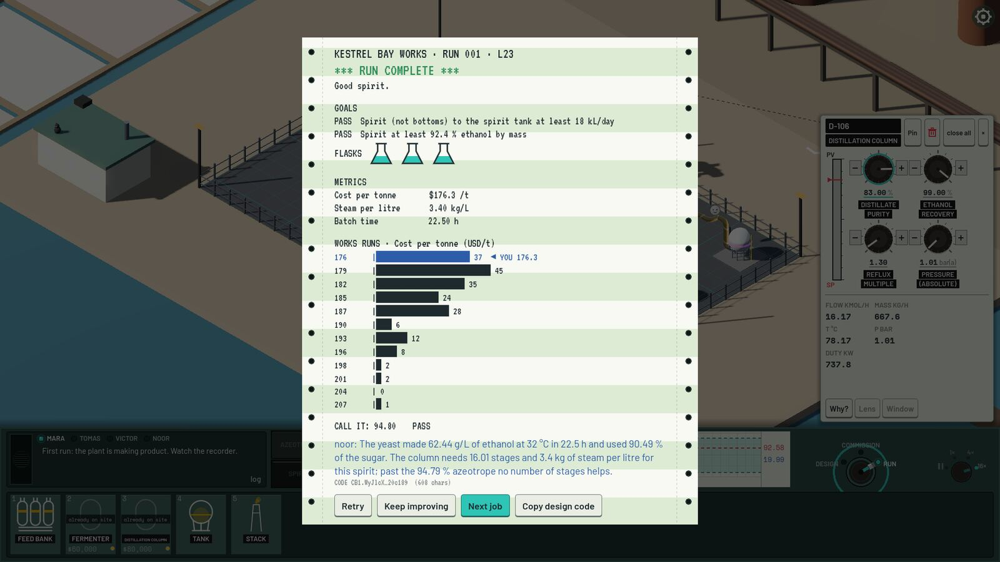

What it teaches. Recycle, purge and the inerts that build up in a loop. You choose how much to purge and pay for it in lost product.
5 jobs: L19 to L23. Site: The loop. All of its jobs are in the classic control-room look for now.

Classic look. L23: the printout of a won run, with the cost per tonne against other runs (an earlier build)
L19 Close the Loop Classic look
The synthesis loop, converter deck
Brief
About a third of the gas turns into ammonia on a pass, and the rest would go up the vent. That is hydrogen we paid for. Send it back.
Take the ammonia out, compress what is left, feed it in again. Nearly all of it should end up as ammonia. Call it: predict before your first commission. The answer box locks when you commission; the printout marks your call right or wrong.
Goal
Overall N₂ conversion at least 97 %
NH₃ to the tank at least 8 t/h
Stars
Overall N₂ conversion at least 97 % and 8.0 t/h of NH₃
Recycle compressor at or under its calibrated power
Cost per tonne at or under the calibrated best
If it fails
The printout names one of these when a goal is missed:
The loop leaks nitrogen.
The gas goes up the vent: there is no recycle.
The loop is closed but the tank is short.
Coach steps (hints that show how to build)
Place the equilibrium converter and a three-way mixer for the two feeds and the recycle.the converter sits at 450 °C and 150 bar; the mixer joins fresh gas to what comes back.
Add a water cooler and the ideal NH₃ separator after the converter.the ammonia must leave the loop as a liquid or it will only be pushed back into the converter.
Place the recycle compressor on the gas leaving the separator.the converter and the separator drop a few bar; the compressor makes it up.
Pipe the compressor back to the mixer to close the loop.an open outlet is a loss; a closed loop gives the gas another pass.
Turn the key. The solver guesses the recycle, runs the plant, and corrects the guess until it stops moving.that guessed stream is the tear stream; the loop is solved when the guess matches the answer.
Read the loop flow against the fresh feed.a low per-pass conversion means a big recycle; the loop is many times the feed.
Ask Why? and follow the nitrogen round the loop.at steady state the nitrogen that goes in is the nitrogen that comes out as ammonia.
L20 The Purge Classic look
The synthesis loop, argon problem
Brief
The cheap nitrogen has argon in it. The loop is already built: find the purge, and see what a loop with no way out does to the argon.
First, on paper: fresh gas 249 N₂, 748 H₂, 3 Ar; 25 % of the N₂ converts per pass, all the NH₃ is removed, 5 % purge. How much argon is in the converter feed? Call it: predict before your first commission. The answer box locks when you commission; the printout marks your call right or wrong.
Goal
NH₃ to the tank at least 8 t/h
Argon in the converter feed at most 10 %
Stars
At least 8.0 t/h of NH₃ with at most 10 % argon in the converter feed
Part A: the argon at the converter inlet on paper, within 0.5 %
Cost per tonne at or under the calibrated best
If it fails
The printout names one of these when a goal is missed:
Argon is choking the converter.
The purge is throwing hydrogen away.
Coach steps (hints that show how to build)
Do the paper problem first and call it: argon at the converter inlet.argon in equals argon out at steady state, and that fixes how rich the loop gets.
The purge is shut. Select the splitter and open it a little.argon does not react and is not condensed; the purge is the only way it can leave.
Commission the loop.the solver now has a loop that can reach a steady state.
Read the argon at the converter inlet and the hydrogen lost in the purge.a small purge keeps the hydrogen but lets argon pile up; a big one does the opposite.
Ask Why? and follow the argon.the argon coming in is exactly the argon the purge carries out.
L21 Cold Enough Classic look
The synthesis loop, refrigeration deck
Brief
The separator is not magic. Colder takes more ammonia out of the gas, but the chiller costs power.
Add the chiller and a flash drum, and set both to one temperature. Raoult tells you what the gas will still carry. The loop you start with is already paid for and does not count as spent: the budget is only what you add. Call it: predict before your first commission. The answer box locks when you commission; the printout marks your call right or wrong.
Goal
NH₃ to the tank at least 8 t/h
Argon in the converter feed at most 10 %
Stars
At least 8.0 t/h of NH₃ with at most 10 % argon in the converter feed
No more than 3 % NH₃ in the purge gas
Cost per tonne at or under the calibrated best
If it fails
The printout names one of these when a goal is missed:
Argon is choking the converter.
Too warm: the gas keeps the ammonia.
Coach steps (hints that show how to build)
Place the flash drum and a product tank. Pipe the gas to the purge splitter and the liquid to the tank.the drum is where gas and liquid ammonia separate by vapour pressure.
Place a second cooler after the water cooler and set it to refrigerant. This one is the chiller, ahead of the drum.water cannot take the gas below about 40 °C; ammonia needs far colder to condense.
Set the chiller and the drum to the same temperature.gas leaves the drum at the drum temperature; if the chiller is warmer, the drum is not really cold.
Commission and read the drum gas.the ammonia the gas keeps is vapour pressure over total pressure.
Compare the NH₃ left in the gas with the vapour pressure over the drum pressure.Raoult: y = P_sat / P. Colder means smaller P_sat and drier gas.
Ask Why? and compare what the recycle carries back.ammonia in the recycle is ammonia already made, and it eats into the converter driving force.
L22 The Methanol Loop Classic look
Methanol synthesis, reactor deck
Brief
Same idea, different molecule. Copper catalyst, cooled tubes, and it hates anything above 280 °C.
The loop is built except for the reactor, and already paid for: the budget is only the tube. Follow the build order: the cooled tube between the heater and the cooler, coolant 220 °C, 6000 kg of catalyst. That meets the goals; the cheapest tonne (the last flask) needs you to tune the catalyst load. The exotherm makes a hot spot near the tube inlet: hotter coolant sinters the copper.
Why the purge cuts both ways. A bigger purge throws away fresh gas with the inerts (less carbon kept); a smaller one lets methane and argon build up in the loop until the reactor starves (less carbon kept again). The intercom's "keeps X % of the carbon" is per pass through the loop; the printout's carbon efficiency is the whole plant, product over carbon fed. The purge starts at a good 20 %. Call it: predict before your first commission. The answer box locks when you commission; the printout marks your call right or wrong.
Goal
Crude methanol to the tank at least 2.4 t/h
Carbon efficiency (methanol carbon over CO + CO₂ fed) at least 85 %
Stars
Crude methanol at the target rate with at least 85 % carbon efficiency
The catalyst never above 280 °C (no sintering)
Cost per tonne at or under the calibrated best
If it fails
The printout names one of these when a goal is missed:
The purge is eating the carbon.
Not enough methanol yet.
The copper is cooking.
Coach steps (hints that show how to build)
Call it first: the stoichiometric number of the fresh gas, (H₂ − CO₂) ÷ (CO + CO₂).methanol wants H₂ and carbon in a fixed ratio; SN near 2 is balanced, far above it means hydrogen to spare.
Place the cooled tubular reactor between the heater and the water cooler.the reaction gives off heat; the tubes carry it away into boiling water as fast as it is made.
Pipe the heater into the tube and the tube into the cooler.the loop is closed by the recycle, but only once gas can pass the reactor.
Give the tube catalyst (about 10 000 kg) and a coolant colder than the 250 °C it starts at, then open the purge a few percent. The coolant moves the hot spot only slowly (about 0.4 K per K); the TUBE COOLING CAPACITY knob moves it a lot more.a colder coolant pulls the hot spot down; the purge stops the inert nitrogen from filling the loop.
Commission and read the hot spot.the hottest point is near the inlet, where the gas is richest, not at the outlet.
Compare the hottest point with the 280 °C the copper tolerates.above it the copper crystals grow together and the catalyst loses area for good.
Ask Why? and see what the recycle and the purge do to the carbon.whatever carbon the purge carries out is carbon the plant paid for and did not sell.
L23 Spirits Classic look
The distillery
Brief
The distillery makes fuel ethanol from molasses. The fuel blenders want ninety-nine point five percent.
Ferment the sugar, then distil the beer. Part A: 95 % spirit (92.4 % by mass) at the target rate. Part B is the blenders' number: see how far a column can really go. Call it: predict before your first commission. The answer box locks when you commission; the printout marks your call right or wrong.
Goal
Spirit (not bottoms) to the spirit tank at least 18 kL/day
Spirit at least 92.4 % ethanol by mass
Stars
At least 18 kL/day of 95 % spirit (92.4 % by mass)
A healthy batch: the yeast fermented at least 85 % of the sugar and grew
Cost per tonne at or under the calibrated best: 182.4 USD per tonne
If it fails
The printout names one of these when a goal is missed:
The yeast is dead.
Not enough spirit.
The batch stalled.
The azeotrope wall.
The spirit is too weak.
Coach steps (hints that show how to build)
Call it first: the highest ethanol mass percent a column can deliver from ethanol and water at 1 atm.ethanol and water form an azeotrope: past it the vapour is no richer than the liquid.
Place the fermenter. Its feed is the sugar charge; the CO₂ leaves from the dome.yeast turns glucose into ethanol and carbon dioxide, and gives off heat the coil must carry away.
Place the distillation column. The distillate goes to the spirit tank (PRODUCT), the bottoms to the vinasse sink (SINK).ethanol boils at 78 °C and water at 100 °C; the column makes that difference count.
Pipe the feed to the fermenter, the beer to the column, the CO₂ to the vent, the distillate to the spirit tank and the bottoms to the vinasse sink.every stream has to end somewhere or the solve cannot close.
Hold the batch near 32 °C for about 22 hours and ask the column for a distillate of at least 92.4 % ethanol by mass. The column knob is in MOLE %, not mass %: 92.4 wt % is 82.6 mol %, so set about 83.the yeast works best at 32 °C, stalls at 42 °C and dies at 45 °C; the column setting is a mole fraction, so the knob reads a little lower than the mass percent.
Commission and read the beer strength and the column.the beer holds about 7 % ethanol; every point of purity you add is paid for in stages and steam.
Compare the purity you asked for with the azeotrope.the model puts the azeotrope at 94.8 wt % (87.7 mol %); measured at 1 atm it is 95.6 wt % (89.4 mol %). Near it the stages and the reflux climb without limit.
Ask Why? and see what the last percent costs.fuel ethanol needs a different separation (molecular sieves), because distillation alone cannot cross the wall.